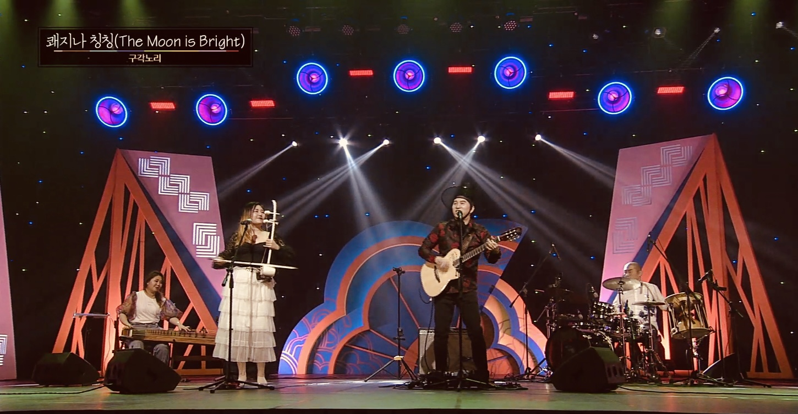
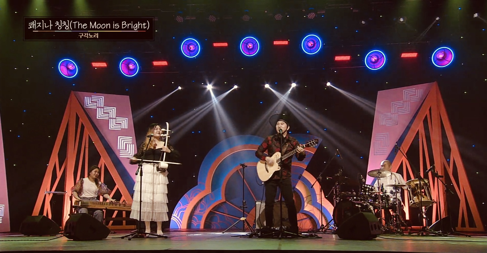
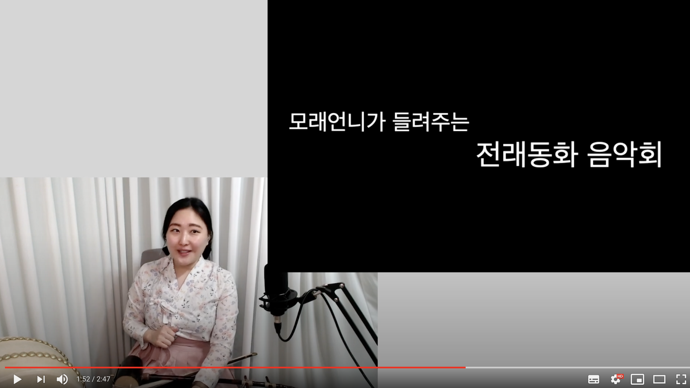
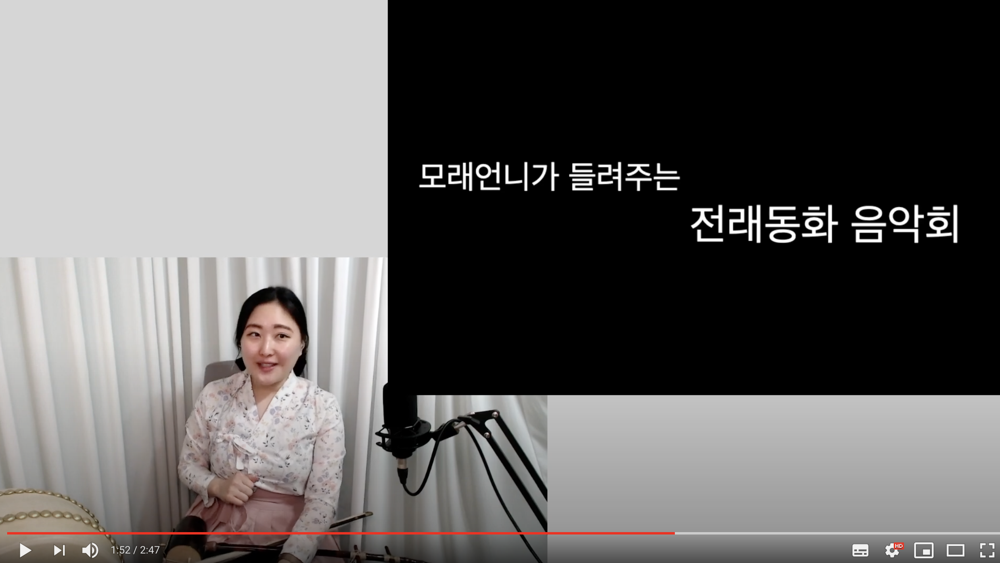

해금병창 모래는 국악을 뿌리고 재즈로 표현하는 음악인 '국악재즈'장르의 음악을 하고있습니다. 한국적 정서가 잘 묻어나면서도 세련도어 대중적이고도 전통적이며, 그 위의 그녀의 청아한 목소리와 애잔하고도 파워풀한 해금연주가 어울어집니다. 그녀는 다양한 음악활동을 통해 전통문화 속 가치있는 메세지를 전달하고있습니다.
달달한시 Sweet poem
한국의 옛시를 국악재즈로 들려드립니다.2017년 서울문화재단 전통예술분야 최초예술지원 선정.
반도에서 부는 바람 Wind from half island
한국의 민요와 판소리를 국악재즈로 들려드립니다.2019년 한국문화예술위원회 청년예술교류역량강화사업 ‘국악재즈 파리를 가다’ 작품.
잔월효성 Losing moon and dawn stars
한국적 정서가 담긴 시를 일렉과 국악을 접목된 음악으로 드려드립니다.2020년 제2회 창작실현무대 병창전 선정.
해금병창 모래 Morae
노래하는 해금연주자 소규모 공연, 한국을 대표할 수 있는 아름다운 곡 부터 대중적인 곡까지 다양한 레파토리로 소규모 공연을 합니다.
모래밴드 Morae band
3~8인조 재즈밴드와 국악이 함께하는 공연. 재즈해금&보컬 모래를 주축으로 재즈스탠다드부터 팝,가요,국악 등을 연주합니다.
피트앤모래 Pete&Morae
2인조 인디국악. 해금병창 모래와 기타리스트 피트정 듀오의 공연으로 공식적인 석상부터 캐쥬얼한 행사까지 소화합니다. 한국적인 세련되고 다정다감한 공연입니다.
구각노리 Gugaknori
4인조 월드뮤직그룹, 한국적 정서를 기반으로 흥,멋,한을 느낄 수 있는 공연. KBS,TBN,국악방송,국립국악원 및 각종 국내외 축제로 찾아가고 있습니다.

해금병창 모래가 한국적 정서를 기반으로한 시,문학을 해설과 함께 국악재즈 음악으로 들려드립니다. 잘 알려진 시문학부터 숨겨진 시문학을 찾아 음악으로 들려드리는 음악활동을 하고있습니다. 1회성 공연 혹은 다회성 강의 까지 1인~8인 구성의 다양한 규모의 강연과 공연이 가능합니다.
한국의 시를 노래하다달달한시
해금병창연주자 ‘모래’의 청아한 목소리와 애절한 해금이 어울어져 들려드리는 시문학음악.과거로 부터의 위로와 공감, 옛 사람들의 지혜를 재즈밴드와 함께 들려드립니다.
스토리텔링 힐링콘서트언제나봄
자연의소리(ASMR)을 배경으로 문학과 음악을 들려드립니다. 이야기를 노래와 해금 그리고 피아노의 하모니로 따뜻하고 감동적인 시간을 선사합니다.정서안정을 위한 스토리텔링 음악회 '언제나 봄'을 소개합니다.
한국영화를 노래하는영화로운 시가
국악재즈로 듣는 영화 속 시와 노래 '영화로운 시가 詩歌'영화 속 녹아있는 한국의 시와 노래. 아름다운 시가(詩歌)를 국악재즈공연과 함께 들려드립니다.
인문학 콘서트, 조선여류시인의 꽃같은 노래 꽃다발 콘서트
조선시대 여류신인들의 숨겨진 노래를 해금병창연주자 ‘모래’의 청아한 목소리와 애절한 해금이 어울어져 들려드립니다. 그녀들의 청춘과 애환이 녹아져 있는 시를 재즈밴드와 함께 국악재즈로 들려드립니다. 조선 3대 여류시인이란 황진이, 허난설헌, 신사임당 뿐 아니라 무명의 숨겨진 여류시인의 노래를 들려드립니다.

해금병창 연주자이자 인성예절지도사 '모래'가 들려주는 인성예절 스토리텔링 공연 및 강연입니다. 동방예의지국 대한민국, 고전 속의 8가지 인성예절 덕목과 가치를 '음악'을 통해 공감과 즐거움으로 들려드립니다. 성인,청소년,어린이를 대상으로 공연,강연 진행합니다.
인성8덕목인 '배려','소통','정직','예절','존중','책임','협동','효'를 통해 세상과의 소통하는 8가지 방식을 음악과 더불어 이야기합니다. 관객층이 익숙한 대중음악을 중심으로 가사분석을 통해 인성 8덕목에 관해 이야기를 나누어봅니다.
어린이 인성예절 음악극동방예의지국의 노래, 인성예절 콘서트. 한시 속에 들어 있는 인생의 핵심가치 및 8가지 덕목을 노래로서 선물해드립니다.동방예의지국의 노래, 인성예절 콘서트. 한시 속에 들어 있는 인생의 핵심가치 및 8가지 덕목을 노래로서 선물해드립니다.


3~5인조 구성의 국악재즈, 스토리텔링 퓨전국악 [달달한시]. 해금병창연주자 ‘모래’의 청아한 목소리와 애절한 해금이 어울어져 들려드리는 시문학음악. 과거로 부터의 위로와 공감, 옛 사람들의 지혜를 재즈밴드와 함께 들려드립니다.
인천중구문화회관 [모래-달달한시]https://youtu.be/czrP6uzt_N8
10월 이도콘서트 [모래-달달한시] https://youtu.be/tR24VUy8Npg
잠실한강공원 축제 [모래-달달한시] https://youtu.be/LYVXq3bt3n0
모래 - 해금병창 모래의 청춘마이크 https://youtu.be/G30a04dGBNs
1. 술을 빚어 만든 사랑노래 ‘광녀의 노래’
-자진모리 장단을 사용한 음악으로, ’여자 보기를 돌같이 하라’라는 이야기를 해학적으로 풀어낸 신라향가이며 자진모리 장단으로 유희적으로 풀어낸 곡.
2.
나의 사랑도 사랑이라서 불러본 노래 ‘만둣가게 이야기(쌍화점)’
:고려시대 자유로운 시대적 분위기를 노래하는 고려시가를 해학적이 느낌으로 재해석한 곡. 별달거리 리듬을 사용하여 풍자적인 분위기를 표현함.
3.
완벽한 너에게 내가 줄 수 있는건 마음뿐이라 ‘겨울날 따슨 빛을’
사랑하는 이에게 모든것 주고싶은 여자의 마음을 쓴 고가신조이며 9박 발라드풍의 아름다운 곡. 잔잔하고 맑은 음색으로 따뜻한 색감을 표현한 음악.
4.
창가에 쌓인 눈을 녹일 바람이 오면, 그날엔.. ‘창가에 눈녹인 바람’
고려시대, 님을 기다리는 한 여자의 바램의 시를 화려한 선율로 자진모리장단을 사용해 화사하게 편곡한 곡.
5.
황진이의 사랑노래, 물처럼 흘러 바다로 간 사랑은 돌아올 수 없어요. ‘황진이가(청산리 벽계수야)’
조선의 명기 ‘명월 황진이’의 유명한 시조, 그녀의 시조를 현대어로 쉽게 풀어 노래한 곡.
6.
너가 이미 떠났다는 것을 나는 믿지 않았어. ‘님아 그강을 건너지 마오 (공무도하가)’
님아 그 강을 건너지마오.' ; 우리나라 가장 오래된 노래이자 해금선율을 더해 감동적이고 슬픈 곡. 풍물드럼의 음악적 표현과 해금과 노래의 아련한 음색이 돋보이는 음악.
7.
비가 와서 참 다행이에요 ‘북쪽 하늘이 맑아서’
조선시대 문인 임제가 기생 한우를 유혹하고자 쓴 아름답고 서정적인 시를 풍자적으로 편곡한 동살풀이 장단의 곡.
8.
최소한의 자존심을 내려놓고 부르는 사랑노래 ‘어이얼어자리’
조선시대 기생 한우가 문인 임제에 대한 답시로서 강렬한 분위기와 멜로디로 편곡된 곡.
9.
사랑하는 이를 향한 작은 투정 ‘사랑거즛말이’
사랑하여 보고싶다면서 꿈 꿀정도로 잠을 잘자는 이에게 작은 투정을 부리는 예쁜 사랑 노래.


반도의 나라, 반쪽 섬, 한국. 이곳에서 부는 바람. 앨범'Wind From Half Island'은 동양의 한국음악과 서양의 재즈음악이 바람처럼 자연스럽게 얽혀 만들어진 ‘국악재즈’음악입니다. 한국음악의 리듬과 스케일을 사용한 재즈로, 한국 민요 ‘태평가, 사랑가, 진도아리랑’을 통해 들려드립니다. 민족의 삶과 정서가 고스란히 느껴지는 ‘민요’를 통해 한국 고유의 정서 ‘흥’과 ‘한’의 멋이 전해지길 바랍니다. 한국음악의 ‘굿거리, 중중모리, 세마치’리듬과 ‘평조, 계면조’스케일을 사용하여 ‘재즈 형식’으로 연주한 앨범입니다.
해금 병창 연주자’모래’는 2016년도 프랑스 파리의 재즈클럽의 연주자들과 연주를 하였고 이로써 프랑스 파리의 재즈씬과의 인연이 시작되었습니다. 3년 뒤, 프랑스 파리에서 활동하는 재즈 뮤지션들과 2019년 11월 30일, 파리의 음악 스튜디오에서 Jam 형식으로 녹음을 하게 되었습니다. 그녀를 주축으로 기타의 ‘Pete Jung’, 피아노의 ‘Fady farah’, 베이스의 ‘Mauro Gargano’, 드럼의 ‘xavier desandre navarre’가 앨범에 참여하였습니다. 이 앨범은 ‘국악 재즈’장르의 가능성을 실험하기 위한 프로젝트로, 2019년도 한국문화예술위원회의 청년국제예술 역량 강화’사업의 지원으로 프랑스 파리에서 제작된 앨범입니다.
a peninsula country, half island, Republic of Korea. the wind blowing here. The album 'Wind From Half Island' is made by a natural blend of Eastern traditional Korean music and Western jazz music. It's jazz using the rhythm and scale of Korean music, and it's played through the Korean folk song 'Tae-pyunga, Saranga, Jindo Arirang.' I hope that "Min-yo," which reflects the life and emotions of the Korean people, will convey the beauty of Korea's unique emotions of "Hung" and "Han”. It is an album that is played in 'Jazz format' using 'Good-Geoli, Jung-jung-mori, Se-ma-chi' rhythms and ‘Pyeong-jo, Gye-Myeon-Jo’ scales.
Haegeum player & Korean Vocal ‘Morae’ played with players from the Jazz Club in Paris, France, in 2016, which began their relationship with the jazz scene in Paris, France. Three years later, she recorded it in jam format on November 30, 2019 at jazz musicians in Paris and music studios in Paris. Centered on her, guitarists ‘Pete Jung’, piano ‘Fady farah’, bass ‘Mauro Gargano’, and drum ‘xavier desandre navarre’ participated in the album.
1. 태평가
대한민국의 생활음악 장르인 ‘민요’ 중 광복 이후의 음악입니다. ‘태평가’는 ‘마음에서 시작되는 삶의 평화를 노래’를 이야기하고 있습니다. 가사의 내용은 삶의 부정적인 측면을 긍정적인 측면으로 감싸앉아 풀어내고 있습니다. “짜증을 내어서 무엇을 하며, 화를 내어 무엇을 할까. 속상한 일도 많은데 놀기도 하면서 살아보세.” 혹은 “거짓말 잘하면 쓸데 있나, 진정을 다하면 소용 있나. 한번 속아 울어봤으니 다시는 속지 않으리라.”등 마냥 웃을 수 없는 상황에서도 달관적인 자세로 노래를 합니다. 이러한 내용을 한국의 전통 리듬’굿거리’와 전통 스케일인 ‘평조’를 통해 가벼운 리듬감과 함께 밝은 멜로디를 만들어냈습니다. 각 수려한 연주자들의 연주와 더불어 해금과 노래의 하모니가 돋보이는 평화롭고 따뜻한 음악입니다.
2. 사랑가
한국 전통음악 장르인 ‘판소리’에서 나온 노래입니다. 한국의 신분제도와 양성 불평등 사회의 문화 속에서 벌어지는 연애의 에피소드를 묘사하는 음악입니다. 한 쌍의 커플이 주고받는 대화 내용으로 남자가 여자에게 사랑을 노래하며 어떤 음식을 먹고 싶은지 되묻고 있습니다. 반면 여자는 남자의 물음에도 쑥스러워 재차 사양을 합니다. 달콤하고 아름다운 한 쌍의 커플을 묘사하는 음악으로, 한국 전통 리듬인 ‘중중모리’리듬과 ‘계면조’스케일을 통해 다소 여성스러운 음악을 표현하고 있습니다. 화려한 피아노 선율과 더불어 전반적인 음악의 프롤로그(판소리의 아니리)를 노래하는 인트로서 음악이 전개됩니다. 눈부시게 아름다운 청춘의 사랑을 음악으로서 표현해내었습니다.
3. 진도아리랑
한국의 진도지역 민요’아리랑’입니다. 한국 전통 스케일인 ‘계면조’의 특징이 재즈를 만나 ‘블루지’하게 표현된 흥미로운 음악입니다. 또한 한국 민요에서 자주 쓰이는 ‘세마치’리듬이 음악에 그루브를 더하였습니다. 한국의 지역별 다양한 종류의 ‘아리랑’이 가진 근본적인 정서인 ‘한’이 재즈의 ‘블루스‘의 정서와 혼융된 듯 어우러졌습니다. 노래의 1절은 누군가를 기다리며 부디 만나길 염원하는 마음을 노래하고 있습니다. 2절에는 염원하는 마음이 변천되어 희망을 노래하게 됩니다. ‘국악재즈’장르로서 블루스의 소울과 한의 정서가 묘하게 어우러진 ‘진도아리랑’을 감상하시길 바랍니다.
1. A song of peace
It is a Korean folk music genre, 'Minyo', and this music is 'Minyo' after liberation. This song sings of peace in life that begins from the heart. The contents of the lyrics cover and unfold the negative aspects of life as positive ones. “What do you do with anger and what will you do with anger? There's a lot of upsetting things, but let's live while playing. " Or "Is it good to lie well? Can I get back with all my sincerity? I was once deceived and crying, so I will not be deceived again.." Even when I can't laugh, I sing with a optimistictical attitude.Through this, Korean traditional rhythm “Good-Geol” and traditional scale “Pyeong-jo” created a bright melody with a light sense of rhythm. It is peaceful and warm music that brings out the harmony of the haegeum and the song along with the performances of each beautiful performer.
2. A love song
This song comes from the Korean traditional music genre, Pansori. It is a music depicting episodes of dating in Identity system and gender inequality society. As a conversation between a couple, a man sings love to a woman and asks what food she wants to eat. The woman, on the other hand, is ashamed of the man's question and declines many times. This music depicts a couple of sweet and beautiful couples, and expresses a somewhat feminine music through the Korean traditional rhythms of “jung-jung-mori” and “Gye-Myeon-Jo”. with the brilliant piano and sing, intro that the prologue(ah-ni-ri of pansori) of the overall music . The brilliant love of youth was expressed as music.
3. Jindo Arirang
This song is kind of ‘Arirang’ that Korean folk song.The traditional Korean scale of 'Gye-Myeon-Jo' is an interesting piece of music that is combined with jazz elements and expressed in ‘bluesy’ . In addition, the “Se-ma-chi” rhythm, which is often used in Korean folk songs, adds a groove to the music.There are various types of “Arirang” in each region in Korea, and this music is from Arirang in Jindo. The fundamental emotion of all Arirang is 'Han', which resembles the 'Blues' emotion. These two emotions are expressed naturally in this music. Verse 1 of the song is about waiting for someone and wishing to meet someone. In verse 2, the sad feelings of desire change and sing hope.As a genre of 'Korean traditional jazz', please enjoy the 'Jindo Arirang', which blends the soul of the blues with the emotion of 'Han'.
태평가 - A Song of Peace 영상 https://youtu.be/-aiqTDsxnEw
사랑가 - A Song of Love 영상 https://youtu.be/rp_q0h8jox4
Jindo Arirang 음원 https://youtu.be/cl62X90oRC0
A song of peace 음원 https://youtu.be/B4NreBvZxk8
A love song 음원 https://youtu.be/Ob9nPdVejqw
해금병창 - 모래 기타 - 피트정드럼 - xavier desandre navarre
피아노 - Fady farah
베이스 - Mauro Gargano
편곡 - Morae
사진 - 이다영
녹음/믹싱/마스터링- Bopcity Max Jesion
후원 - 한국문화예술위원회
프랑스 파리 'Bopcity Studio' 2019.11.30
Haegeum & Korean.Vocal - Morae Guitar - Pete JungDrum - xavier desandre navarre
Piano - Fady farah
Bass - Mauro Gargano
Arrangement - Morae
Photo - Dayoung Lee
Recording / Mixing / mastering - Bopcity Max Jesion
support - Korea Culture and Arts Committee
2019.11.30 'Bopcity Studio' in Paris
해금병창 모래 독주회 겸 작곡발표회 [ 잔월효성 (지는 달과 새벽 별) The Losing moon and the dawn stars ]
공연실황 3분 영상입니다.
https://youtu.be/Fmieet6wWfk
작품 내용 1. 잔월효성 (지는 달과 새벽 별)
우리는 모두 연결되어 있습니다. 코로나 19사태로 더욱 연결되고싶어서 서로에게 숨고있습니다. 우리는 모두 공존해야 살아나갈 수 있으니 이 모양이 지는 새벽 달과 새벽별과 같은 존재로 보입니다. 잠시 혹은 서로를 위해서 보이지 않아주는 상황을 잔월효성에 빗대어 표현했습니다.
작품 내용 2. 21그램
코로나 19로 떠나간 이를 향한 위로. 남겨진 이를 위한 음악. 떠나간 이들의 자리가 허전하여 어찌할 바를 모를 이들에게 주는 영혼의 위로를 남긴다.“영혼의 무게 21그램. 몸 떠난 혼이 어디로 가는가. 다시 돌고 돌아 오는가. 어디까지 돌아 오는가“
작품 내용 3. 본능의 영역
알을 깨고 나오는 고통. 감정에 휩싸인 사람은 혼자서 그 곳을 빠져나오기 쉽지 않습니다. “감성의 영역에 빠져있는 사람에게 이성적인 판단을 내리라고 요구하는 것은 불가능하다.“
작품 내용 4. 화려한 방
현대인의 우울한 감정을 노래하고있습니다. 네온사인으로 가득한 화려한 밤의 조명이 방 안의 창틀을 타고 넘어 들어옵니다. 그렇게 개인적인 공간인 ‘내 방’ 안마저 화려한 방이 되어버립니다. ‘화려한 밤’이 만들어낸 의도치 않은 ‘화려한 방’안에서 상대적 박탈감을 느끼는 도시인들이 불면증을 견디어 넘기는 음악을 그려보았습니다.
작품 내용 5. 강아지풀’
사랑이 넘치는 한 여성의 모습을 그려보았습니다. 잔디 위 초록빛 강아지풀을 닮아 기분 좋은날에는 몸을 흔들며 콧노래를 부르는 여유를 가진 그녀. 그런 사랑이 비슷한 모양의 사랑을 빗어냈습니다. 어머니의 모습 닮은 모습을 닮은 딸이 그려보는 모녀자화상입니다.
작품 내용 6. 천개의 영혼
이승과 저승의 경계가 있는가. 이승에 사는 사람은 모를 일이다. 저승으로 떠나는 이가 무서워하는것은 죽음이라는 고통의 순간이 아니다. 그들의 두려움은 진정 떠나는게 무서운 것이다. 누구나 떠나간다. 보내는 이는 너무나고 아쉽고, 그 공허한 자리를 채울 방법을 몰라 두렵다. 먼저 떠나간 이들에게 내가 보내는 이를 반겨주길 바라는 마음에 노래를 편지삼아 띄운다.
작품 내용 7. 고양이가 모인다
‘소문’의 형체를 대하는 인간의 모습을 풍자하는 음악이다. 우리나라 속담들을 기반하여 고양이가 주인공이 되어 인간의 모습을 이야기한다. 소문을 잡아주기도하고 퍼뜨려주기도하며 인간의 본성에대하여 이야기를 하는 내용이다.


1인조로 활동하며 요청에 따라 밴드구성으로 공연합니다. 민요부터 팝,가요까지 장르의 제한없이 다양한 음악을 들려드립니다. 해금과 노래를 통해 특별한 행사와 장소에 맞는 선곡을 요청받습니다.
동백아가씨 - 해금병창 (돈화문국악당 버스킹)https://youtu.be/ZM5UDamg74o
나성에 가면 cover by 모래 hhttps://youtu.be/_ZFkeMeqEMs
이규보 ’꽃이 예쁜가요 제가 예쁜가요’ +제주민요 ‘너영나영' https://youtu.be/6iPd318QE-s
새야새야 https://youtu.be/ICVyI1WlNHk
공연셋리스트 예시
1. 바람이 불어오는 곳 (가요)
2. 쾌지나칭칭 (민요)
3. 쑥대머리 (판소리)
4. 제주도의 푸른 밤(가요)
5. Let it be (팝송)
6. 인연 (가요)
7. 나성에가면(트로트)
8. 아름다운 나라 (국악가요)
9. My favorite things (팝재즈)
10. 날좀보소 (민요-밀양아리랑)
11. 사랑거즛말이 (시조)
12. 홀로아리랑(신민요)

"애잔한 해금소리와 어우러진 청아한목소리의 한국적인 재즈를 들려드립니다."
장르 : 국악재즈(퓨젼국악)
편성 : 3~5인조 (트리오/퀄텟/퀸텟)
구성 : 해금 & 노래 + 기타 + 피아노 + 드럼 + 콘트라베이스
공연시간 : 10~120분
인천중구문화회관 [모래-달달한시]https://youtu.be/czrP6uzt_N8
10월 이도콘서트 [모래-달달한시] https://youtu.be/tR24VUy8Npg
잠실한강공원 축제 [모래-달달한시] https://youtu.be/LYVXq3bt3n0
모래 - 해금병창 모래의 청춘마이크 https://youtu.be/G30a04dGBNs
My Favorite things 싱글음원 https://youtu.be/yV6GBgue264
해금병창 모래 인천클럽데이 https://youtu.be/qSFzQsOWCcc
태평가 - A Song of Peace https://youtu.be/-aiqTDsxnEw
사랑가 - A Love Song https://youtu.be/rp_q0h8jox4g
My favorite things https://youtu.be/yV6GBgue264
Black orpheus https://youtu.be/RWVX7QcQX1A
Lullaby of birdland싱글음원 https://soundcloud.com/morae-music/lullaby-of-birdland-morae
-청아한 목소리와 애잔한 해금소리, 기타의 아름다운 선율로 들려드리는 음악. 해금병창 모래와 기타리스트 피트정의 퓨전국악듀오 ‘피트앤모래’가. 가요, 트로트, 민요, 재즈, 팝송 등을 ‘국악스타일’로 재해석한 커버곡과 자작곡을 연주하며, 다정하고 밝은 에너지를 전해드립니다. 관중들과 호흡 하며, 전연령층이 함께 즐길 수 있는 친근한 공연을 선사합니다. 각 장소에 어울리는 음악을 퓨전국악듀오 ‘피트앤모래’만의 선곡을 통해 매회 새롭게 꾸밉니다. 관객들의 눈높이에 맞춘 곡 리스트와 더불어 해설과 소통을 통해 가족 같은 분위기를 만들어 나갑니다.
피트앤모래 동영상 : L.O.V.E. https://youtu.be/mg5kBFdbUZg
피트앤모래 동영상 : Fly to the Moon https://youtu.be/ypy1AFFkHQ0
피트앤모래 동영상 : 무지개콘서트-하남문화재단 https://youtu.be/hp2LibLLJ8I
전연령 대상으로 매 회차 달라지는 공연장소와 관객에 어울리는 곡을 선곡합니다.)
1. 바람이 불어오는 곳 (가요)
2. 쾌지나칭칭 (민요)
3. 쑥대머리 (판소리)
4. 제주도의 푸른 밤(가요)
5. Let it be (팝송)
6. 인연 (가요)
7. 나성에가면(트로트)
8. 아름다운 나라 (국악가요)
9. My favorite things (팝재즈)
10. 날좀보소 (민요-밀양아리랑)
11. 사랑거즛말이 (시조)
12. 홀로아리랑(신민요)
13. 여우비 (가요)
14. 나가거든 (가요)
15. 상사화 (가요)
16. 청산리벽계수야 (시조)
17. 태평가 (민요)
18. 사랑가 (민요)
19. 진도아리랑 (민요)
20. 꽃이피고지듯이 (가요)
한국의 원초적 감성, 구각노리! ‘국악으로 놀아보세.’라는 의미가 팀 이름에 직관적으로 담겨 있다. 그들의 음악 속에는 한국인의 특유의 감성인 ‘한’과 ‘흥’이 녹아있다. ‘해금’이 표현하는 애절함과 광적인 슬픔, ‘거문고’가 표현하는 열정과 담담함. ‘병창’의 환희, 그 반면의 그리움. ‘풍물드럼’으로 들려주는 한국적 풍경과 신명, 마지막으로 ‘기타리스트’의 춤사위와 더불어 시김새와 한탄. 이 모든 요소가 복합적으로 얽혀 한국의 원초적 감성을 노래한다.
바람이분다-국립국악원 https://www.youtube.com/watch?v=FWUXwUwPGWI
KBS 국악한마당-광끼 https://www.youtube.com/watch?v=7-0M9jRPA1s
평택록페스티벌-쾌지나칭칭 https://www.youtube.com/watch?v=0PoZfIDqm6w
 

스토리텔링 퓨전국악 "달달한시"
해금병창연주자 ‘모래’의 청아한 목소리와 애절한 해금이 어울어져 들려드리는 시문학음악. 과거로 부터의 위로와 공감, 옛 사람들의 지혜를 재즈밴드와 함께 들려드립니다.
1~5인조 구성의 국악재즈 공연 그리고 음악을 통해 들려드리는 한시 이야기.
인천중구문화회관 [모래-달달한시]https://youtu.be/czrP6uzt_N8
10월 이도콘서트 [모래-달달한시] https://youtu.be/tR24VUy8Npg
잠실한강공원 축제 [모래-달달한시] https://youtu.be/LYVXq3bt3n0
1. 술을 빚어 만든 사랑노래 ‘광녀의 노래’
자진모리 장단을 사용한 음악으로, ’여자 보기를 돌같이 하라’라는 이야기를 해학적으로 풀어낸 신라향가이며 자진모리 장단으로 유희적으로 풀어낸 곡.
2. 나의 사랑도 사랑이라서 불러본 노래 ‘만둣가게 이야기(쌍화점)’
고려시대 자유로운 시대적 분위기를 노래하는 고려시가를 해학적이 느낌으로 재해석한 곡. 별달거리 리듬을 사용하여 풍자적인 분위기를 표현함.
3. 완벽한 너에게 내가 줄 수 있는건 마음뿐이라 ‘겨울날 따슨 빛을’
사랑하는 이에게 모든것 주고싶은 여자의 마음을 쓴 고가신조이며 9박 발라드풍의 아름다운 곡. 잔잔하고 맑은 음색으로 따뜻한 색감을 표현한 음악.
4. 창가에 쌓인 눈을 녹일 바람이 오면, 그날엔.. ‘창가에 눈녹인 바람’
고려시대, 님을 기다리는 한 여자의 바램의 시를 화려한 선율로 자진모리장단을 사용해 화사하게 편곡한 곡.
5. 황진이의 사랑노래, 물처럼 흘러 바다로 간 사랑은 돌아올 수 없어요. ‘황진이가(청산리 벽계수야)’
조선의 명기 ‘명월 황진이’의 유명한 시조, 그녀의 시조를 현대어로 쉽게 풀어 노래한 곡.
6. 너가 이미 떠났다는 것을 나는 믿지 않았어. ‘님아 그강을 건너지 마오 (공무도하가)’
우리나라 가장 오래된 노래이자 해금선율을 더해 감동적이고 슬픈 곡. 풍물드럼의 음악적 표현과 해금과 노래의 아련한 음색이 돋보이는 음악.
7. 비가 와서 참 다행이에요 ‘북쪽 하늘이 맑아서’
조선시대 문인 임제가 기생 한우를 유혹하고자 쓴 아름답고 서정적인 시를 풍자적으로 편곡한 동살풀이 장단의 곡.
8. 최소한의 자존심을 내려놓고 부르는 사랑노래 ‘어이얼어자리’
조선시대 기생 한우가 문인 임제에 대한 답시로서 강렬한 분위기와 멜로디로 편곡된 곡.
9. 사랑하는 이를 향한 작은 투정 ‘사랑거즛말이’
사랑하여 보고싶다면서 꿈 꿀정도로 잠을 잘자는 이에게 작은 투정을 부리는 예쁜 사랑 노래.


문학공연 : '언제나 봄' 정서안정을 위한 퓨전국악 스토리텔링 음악회
자연의소리(ASMR)을 배경으로 문학과 음악을 들려드립니다. 이야기를 노래와 해금 그리고 피아노의 하모니로 따뜻하고 감동적인 시간을 선사합니다.정서안정을 위한 스토리텔링 음악회 '언제나 봄'을 소개합니다.
공연팀 규모 : 1~3인조
언제나 봄 공연영상 1 https://youtu.be/6iPd318QE-s
언제나 봄 공연영상 2 https://youtu.be/WGwDHtVNfcY
언제나 봄 공연영상 3 https://youtu.be/ZM5UDamg74o
언제나 봄 공연영상 4 https://youtu.be/gU5o2TCOZJ8
언제나 봄 공연영상 5 https://youtu.be/VGJgi-qzsIk
국악재즈로 듣는 영화 속 시와 노래. 영화 속 녹아있는 한국의 시와 노래. 아름다운 시가(詩歌)를 국악재즈공연과 함께 들려드립니다.
국악재즈로 듣는 영화 속 시와 노래 한국영화 속에서 발견하는 우리나라의 아름다운 시와 노래. 한국인의 정서와 문화가 녹아있는 한국의 영화 속에서 찾는 문학적 정서. 우리나라 시가 (향가,고려가요,시조) 모티브로 만들어진 영화들을 통해 풀어나가는 이야기를 더불어 영화 속 노래를 '해금병창'연주자 모래가 국악재즈로 새롭게 들려드립니다.
영화로운시가 강연,공연 영상 https://youtu.be/uSyaa93NC5Q
1~5인조 구성의 국악재즈 공연 및 강연, 음악을 통해 들려드리는 조선시대 여류신인들의 숨겨진 노래 이야기.

1~5인조 구성의 국악재즈 공연 및 강연, 대중음악의 가사를 통해 들여보는 세상과의 바른 소통방식을 이야기합니다. 대중음악 속 인성8덕목에 관한 이야기.
선곡 중 '신라의 달밤' https://youtu.be/ne5YOeNT4Qg
선곡 중 '나성에 가면' https://youtu.be/_ZFkeMeqEMs
선곡 중 '동백 아가씨' https://youtu.be/pJ-ZsBOeIW8

1. 시즌2 : 소곤소곤 전래동화 음악회 (전래동화)
2. 시즌 3 : 마음거지와 빨간실 (인성예절 전래동화)
대면공연 어린이 전래동화 음악회 편집영상 https://youtu.be/34SXh8IkI5s
비대면 어린이 전래동화 음악회 풀영상 https://youtu.be/tR24VUy8Npg
 
